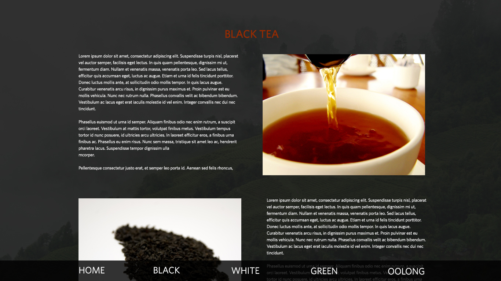
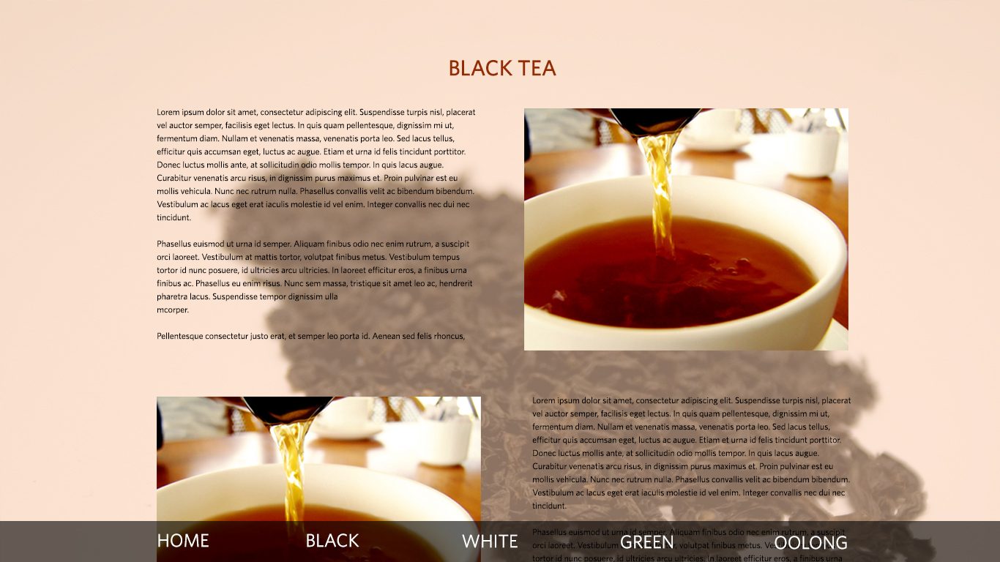
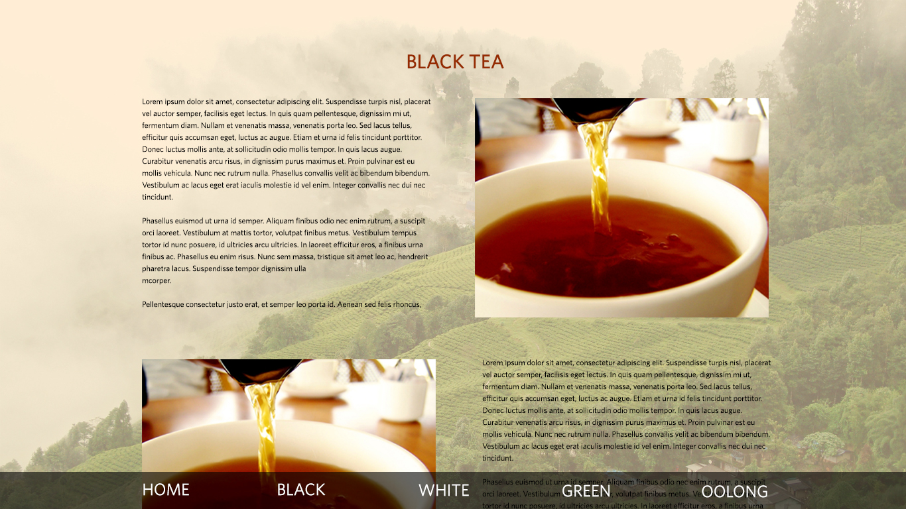

  
Stuff to talk about:
Which body page is best? (I could also just make one with a solid background/no transparency/image)
I'm planning to have subheads within the body copy (history, preparation, etc)